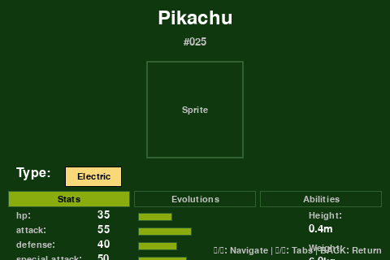
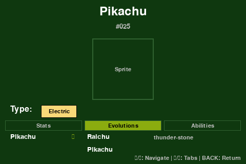
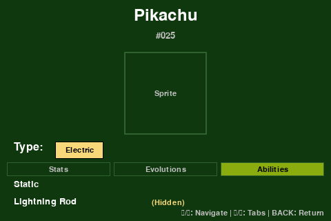
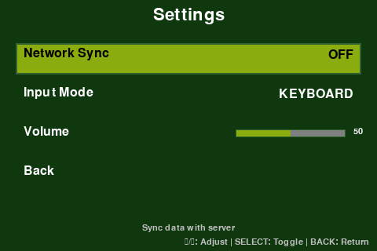
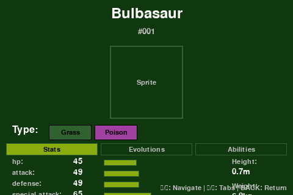

🎮 ShokeDex MVP - Feature Implementation 🎮
A Raspberry Pi Pokédex with Modern UI Features
1. Home Screen - Grid View

Main grid view showing Pokémon in a 4x3 layout. Features:
• Page navigation for browsing all Pokémon
• Search/filter bar at top
• View mode buttons (All/Recent/Favorites)
• Optimized for 480x320 display
2. Home Screen - Selection

Grid view with Pikachu (#025) selected. Shows:
• Visual selection highlighting
• Arrow key navigation support
• Page indicator (Page 3/13)
• Current view mode display
3. Detail Screen - Stats Tab

Pokémon detail view showing Pikachu's stats:
• Base stats with visual bars
• Type indicators (Electric)
• Height and weight information
• Tabbed interface (Stats/Evolutions/Abilities)
4. Detail Screen - Evolutions Tab

Evolution chain display:
• Shows evolution path (Pichu → Pikachu → Raichu)
• Evolution requirements (level, items, etc.)
• Clean visual representation
• Arrow indicators for evolution flow
5. Detail Screen - Abilities Tab

Pokémon abilities display:
• Lists all abilities
• Marks hidden abilities with (Hidden) tag
• Clean, readable layout
• Easy to navigate with arrow keys
6. Settings Screen

Application settings:
• Network Sync toggle (with offline/online logic)
• Input Mode selection (Keyboard/GPIO)
• Volume control slider
• Interactive menu with descriptions
7. Detail Screen - Bulbasaur

Another Pokémon example (Bulbasaur #001):
• Dual-type display (Grass/Poison)
• Complete stat breakdown
• Left/Right navigation between Pokémon
• Consistent UI across all Pokémon
✨ Implemented MVP Features
- Home Screen: Grid view with search bar, recent/favorites indicators, and page navigation
- Search Functionality: Incremental search by name, ID, or type with live results
- List/Grid Views: Multiple view modes with filtering and pagination
- Detail Screen: Comprehensive Pokémon information with tabbed interface
- Stats Display: Visual stat bars, types, height, weight, and physical stats
- Evolution Chains: Complete evolution paths with requirements
- Abilities: All abilities including hidden ones
- Button Navigation: Full keyboard/GPIO support (↑↓←→ Enter Esc Tab)
- Sync Manager: Offline/online sync logic stub for future expansion
- Responsive UI: Optimized for 480x320 small displays
- Stub Screens: Placeholder screens for future features
- Database Integration: All features backed by local SQLite database
🎮 Navigation Controls
- Arrow Keys / WASD: Navigate menus and selections
- Enter / Space: Select/confirm
- Escape / Backspace: Go back
- Tab: Open settings
- ↑/↓: Cycle tabs in detail view
- ←/→: Navigate between Pokémon in detail view